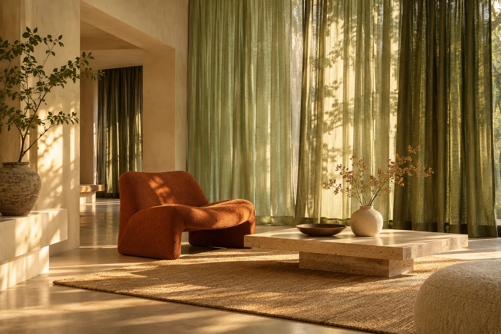
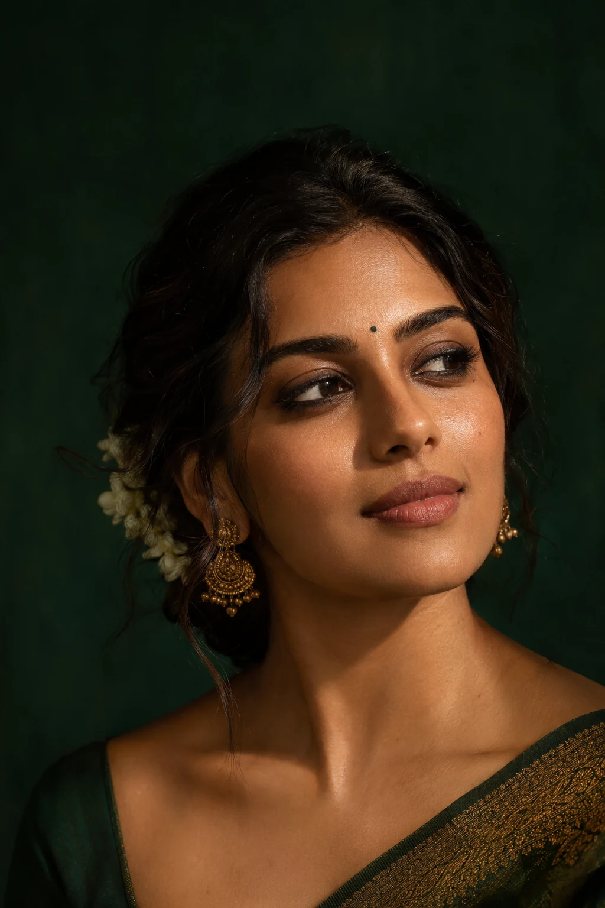

Three stories.
Three worlds.
Original website concepts for three local businesses. Each has its own visual language, interactive 3D objects and scroll-led story. Choose a world to explore.
 ↗
↗Lubna’s
Designer Wear
A sculptural fabric atelier. Explore a silk form, discover a colour direction and draft a personal tailoring note.
SILK / MOVEMENT / INDIVIDUALITY
↗Kushal
Decor
An architectural material study. Recolour the 3D curtains, change the light and shape an idea for your room.
MATERIAL / LIGHT / ATMOSPHERE
↗Makeup
by Savitha
A cinematic beauty editorial. Explore a sculptural compact, choose an inspiration direction and prepare an event enquiry.
COLOUR / PRESENCE / PERSONALITYMade to explore.
Scroll through each story. Drag the 3D objects, or focus them and use arrow keys. Every site includes a motion toggle and a mobile layout.
Grounded in research.
Each concept is informed by public business listings. All editorial photographs are AI-generated inspiration, not business portfolio work. Contact details and services should be confirmed with the business.
Ready for the next step.
Explore the concepts on desktop or mobile. Enquiry tools prepare a note you can copy or open as an email draft. Nothing is sent or booked automatically.